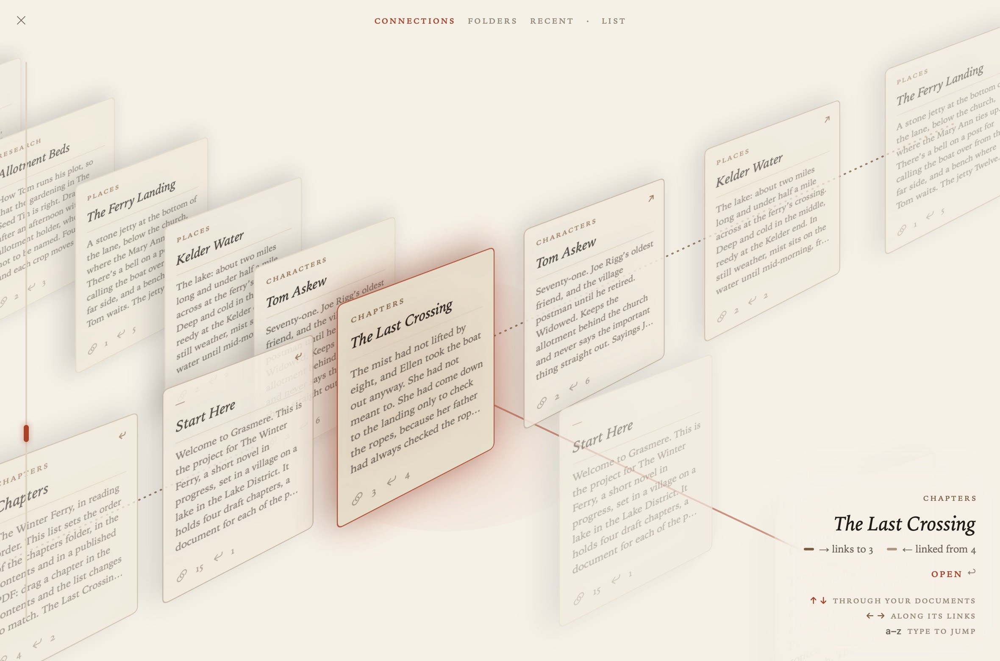
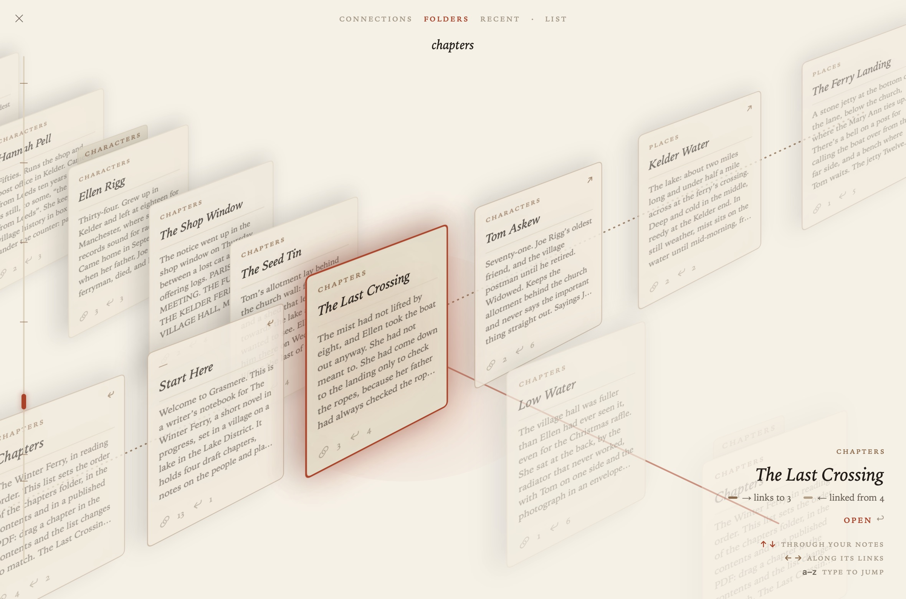
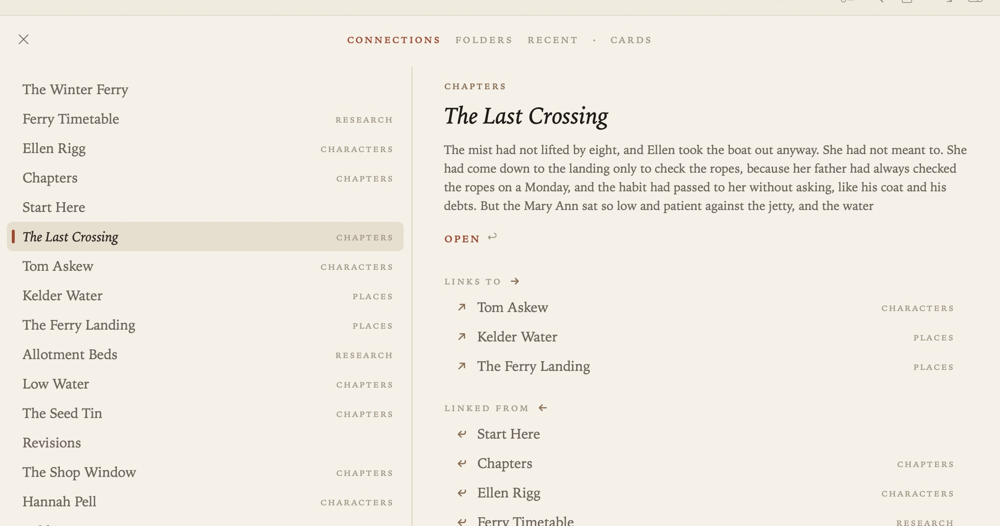

The Index
The Index shows every document in your project as a card, so you can see what you have and how it connects. View ▸ Index (⇧⌘L), or the button in the running head, opens it on the document you’re reading. Press ⇧⌘L or esc to go back to the document.

Two lines of cards
The cards sit in two crossing lines.
- The deck runs from the top left to the bottom right and holds every document. ↑ and ↓ go through it.
- The link line crosses the card in front. The documents it links to run up to the top right; the documents that link to it run down to the bottom left. ← and → go along it.
So you can walk from document to document by their links without opening any of them. The caption shows the card in front and how it relates to where you started. Press Return, or click Open, to open it.
A swipe or a scroll works too: up and down for the deck, left and right for the links.
Ordering the deck
Choose an order at the top of the Index:

- Connections: the documents that link to the current one, the document itself, the documents it links to, then their neighbours, then the rest by folder.
- Folders: in the order of the contents, with a divider for each folder.
- Recent: the most recently edited first, with the time on each card.
Type the first letters of a title to jump to it.
List
The List button shows the same documents as a plain list, if you’d rather read than browse.

Related
- The Margin, for one document’s links at a glance
- Links and Backlinks